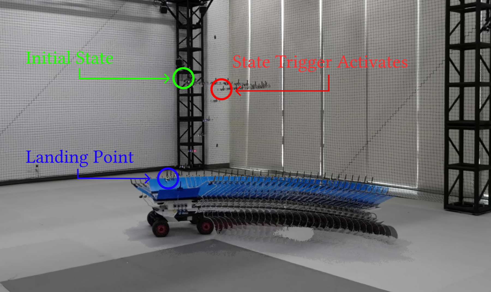
ICCAS 2026
A quadrotor lands on a moving platform using online trajectory optimization, with tighter approach limits activated inside the final capture region.
Department of Electrical and Computer Engineering, Inha University
Hardware flights
Watch the quadrotor approach and land on the moving target. Accumulating motion trails show the flight; the red ring marks state-trigger activation.
Software-in-the-loop
The same planner follows six different target-motion profiles.
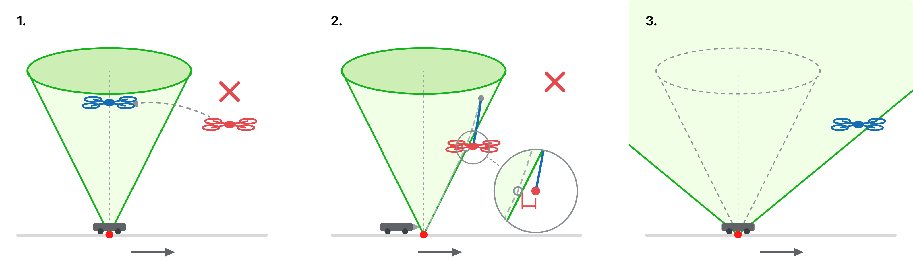
A glideslope cone imposed over the entire planning horizon admits only a narrow family of initial conditions. Three treatments of the constraint are available, and each degrades the problem in a different way.
start over the platform: choosing only starts directly above the platform sidesteps the lateral approach rather than solving it.
ride the boundary: an optimum with little margin can leave the next initial condition outside the cone after a tracking error.
widen the cone: opening it far enough to admit a realistic start leaves it too loose to shape the approach at all.
The final-approach cone should shape the landing without ruling out the earlier lateral approach. State-triggered constraints activate the tighter bounds inside the capture region.
Approaches to state-dependent logic in trajectory optimization differ in how they enforce a condition. Mixed-integer and hybrid formulations introduce binary decisions or a prescribed mode sequence; smooth-robustness methods relax the logic into the cost; state-triggered constraints keep the condition hard while remaining continuous.
Compound state-triggered constraints and their continuous-time extension were developed within sequential convex programming [8], [10]. This work carries that construction into differential dynamic programming, applying the final-approach bounds only when the vehicle enters the capture region.
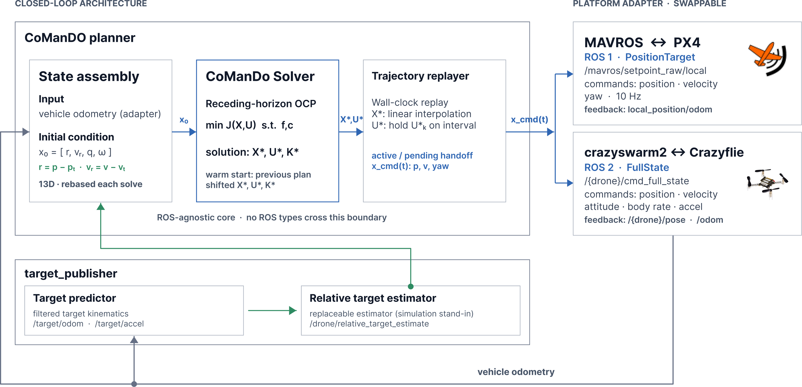
Because the constant-acceleration predictor is only locally valid, the OCP is re-solved at each replanning instant from the latest state estimate. Each solve spans a fixed number of \(N\) intervals with free time steps \(\Delta t_k\), so the horizon duration \(\sum_{k=0}^{N-1}\Delta t_k\) is itself an optimization variable and can shorten as the vehicle approaches touchdown.
Only a short prefix of the resulting plan is executed, and the next solve is warm-started from the shifted solution. The full horizon is retained at every cycle so that the terminal touchdown conditions and STC approach bounds remain enforced.
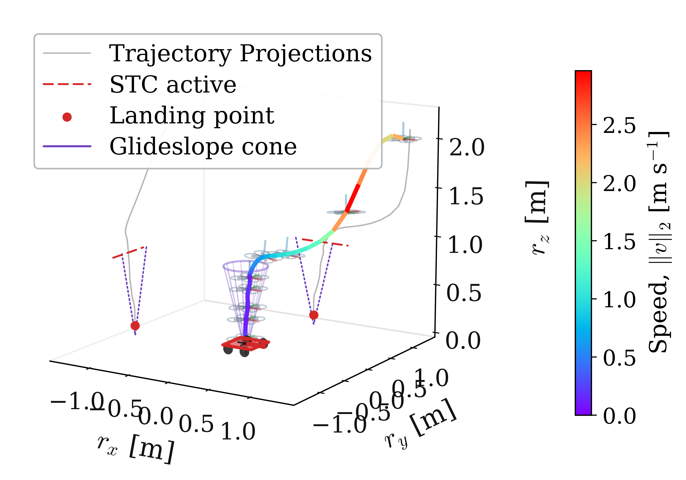
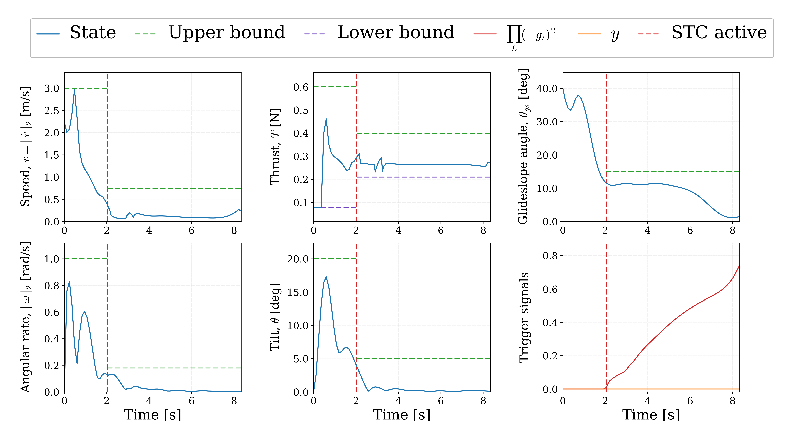
The final approach uses a compound state-triggered constraint (STC) with trigger functions
Each trigger is active for \(g<0\); their AND therefore applies the tightened bounds only below \(z_{\mathrm{trig}}\) and within \(R_{\mathrm{cap}}\), so lateral capture precedes tightening.
Let \(\bm d_k\le\bm 0\) collect the path bounds and the time-step bounds. Let \(\bm g_{\mathrm{trig},k}\) collect the two trigger functions, and let \(\bm c_{\mathrm{con},k}\) collect the six consequence functions; vector inequalities are componentwise. For \(k=0,\ldots,N-1\), the complete landing OCP is
With \(s_\theta^{\mathrm{stc}}=\sin(\theta^{\mathrm{stc}}/2)\), where \(\theta\) denotes the tilt angle from vertical, the six triggered consequences bound approach speed, tilt, body rate, the glideslope cone, and upper/lower thrust:
The physical state is extended with absolute time \(t_k\) and the scalar STC accumulator \(y_k\) to form
and the physical control \(\bm u_k\in\mathbb R^4\) is extended with the free time step \(\Delta t_k\) to form
With \(\tilde{\bm x}_{k+1}=\tilde f_k(\tilde{\bm x}_k,\tilde{\bm u}_k)\), DDP builds the Bellman recursion
Related constrained-DDP methods include ALTRO and IPDDP. Here, the solver uses a CALIPSO-style augmented-Lagrangian/interior-point structure: cone inequalities use an interior-point treatment, while terminal equalities use augmented-Lagrangian updates. The STC terminal residual can therefore be nonzero during optimization.
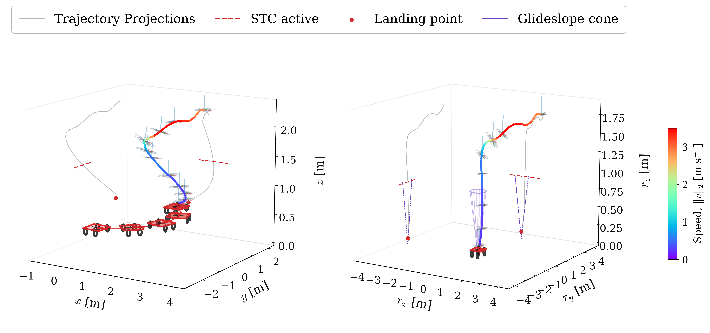
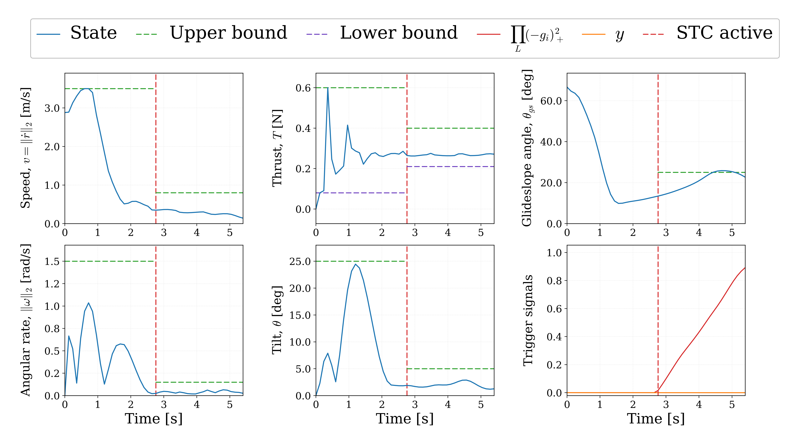
An STC pairs a trigger function \(g(\bm x)\) with a bound \(c(\bm x,\bm u)\le 0\) that must hold only in the region where \(g(\bm x)<0\). Adopting the D-GMSR zero-set form, with \((a)_+=\max(0,a)\), this state-conditioned bound is encoded by the scalar
For multiple triggers, compound STCs represent logical AND by multiplying the trigger factors and logical OR by summing them:
Squaring the positive-part factors ensures \(C^1\) smoothness at every switching boundary, which is essential for gradient-based optimization. Following the CT-cSTC reformulation, the selected STC measures are aggregated into a single nonnegative integrand, and a scalar accumulator \(y\), initialized at \(y_0=0\), evolves according to
The reference SCP formulation uses per-interval budgets \(y_{k+1}-y_k\le\beta_k\). This implementation instead handles a single terminal condition \(y_N=0\) through its augmented-Lagrangian branch, allowing a nonzero accumulator residual during optimization. Positive per-interval budgets can also be represented in DDP; the terminal form is a choice of this implementation.
Proposition 1. Consider the RK4 accumulator update above, where \(H_i\ge 0\) at all RK4 stages and \(\Delta t_k>0\). If \(y_0=0\) and the terminal equality \(y_N=0\) holds exactly, then \(H_i=0\) for every RK4 stage of every interval.
This implication concerns the discrete RK4 stages under exact equality. Finite solver tolerances and behavior between quadrature stages require separate checks; hardware tracking can also produce physical constraint excesses.
The trigger enters the backward pass through the \(y_k\) row of the augmented dynamics. Partitioning \(V_{\tilde x,k+1}=[\,V_{x,k+1}^\top,\,V_{t,k+1},\,V_{y,k+1}\,]^\top\), the Bellman chain rule expands by block rows as
The terminal augmented-Lagrangian term contributes to \(V_{y,N}\), and the backward pass combines it with the accumulator-dynamics sensitivities. This contribution need not be nonzero: squared positive-part densities have zero first derivatives wherever they vanish.
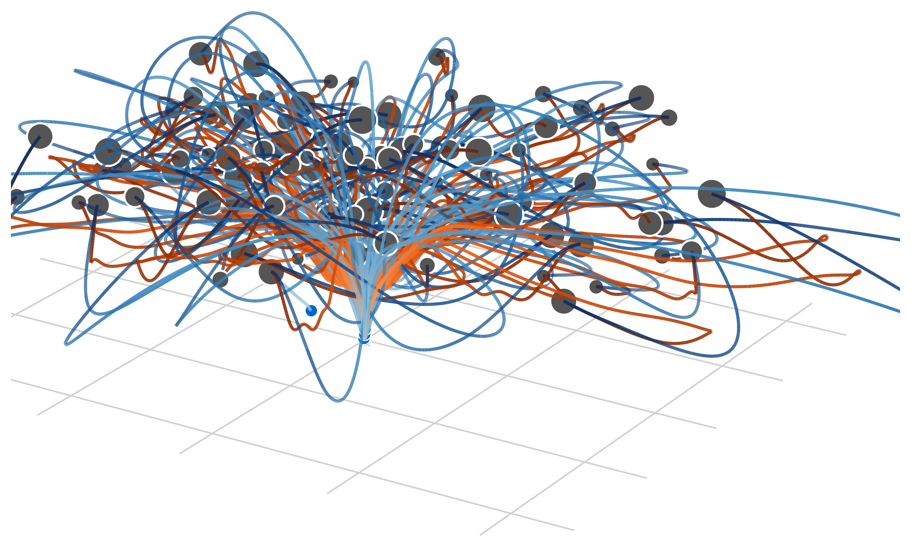
| Metric | cSTC-DDP | SCP arm |
|---|---|---|
| Compliant landings / 100 | 93/100 | 86/100 |
| All landings / 100 | 98/100 | 86/100 |
| Median ‖ep‖ [m] | 6.76×10−5 | 9.07×10−4 |
| Solve time, med / p95 [s] | 0.95 / 1.22 | 4.05 / 9.51 |
Tab. 1 compares the proposed cSTC-DDP with an OpenSCvx baseline using per-interval CT-cSTC. Both solve the same OCP from 100 fixed initial conditions (ICs), sampled with \(r_{xy}\in[0.25,4.5]\) m, \(r_z\in[1.7,3.0]\) m, and \(\lVert{}_{\mathcal T}\bm v_{\mathcal B}\rVert_2\in[0.2,2.95]\) m/s; below \(r_z=1.8\) m, \(r_{xy}\le 1.1\) m. Native grids use 80 DDP intervals and 21 SCvx nodes.
A landing requires finite outputs, \(\lVert\bm e_p\rVert\le 0.10\) m, \(\lVert\bm e_v\rVert\le 0.30\) m/s, and maximum hard-path excess at most \(10^{-2}\). Compliance also checks saved-node consequence tolerances: 0.05 m for geometry, 0.10 m/s for speed, 1° for tilt, and 0.025 rad/s for body rate. Error medians use compliant landings; solve times use all runs and exclude initialization and auditing. Unlike the 180 ms hardware replans, these full-horizon solves have no warm start.
The results show seven more compliant cSTC-DDP landings, lower median position error, and shorter solve times.
With the same solver, always enforcing the final limits makes all 100 ICs infeasible at \(\bm x_0\) (85 speed, 88 glideslope; union 100); removing them also lands 100/100, but every trajectory exceeds at least one final-approach safety limit and is therefore unsuitable for hardware execution.
Gazebo-based software-in-the-loop (SITL) simulations evaluate six planar target motions: straight, circular, figure-eight, stop-and-go, piecewise-acceleration, and random-acceleration.
Across 50 trials per motion, 290/300 trials land successfully: 40/50 for circular motion and 50/50 for each of the other five motions.
Another 60 circular-motion trials (20 per level) apply zero, nominal, or high Gaussian target-estimate uncertainty, with a fixed per-trial bias drawn at \(0.5\sigma\). All 60 trials land successfully.
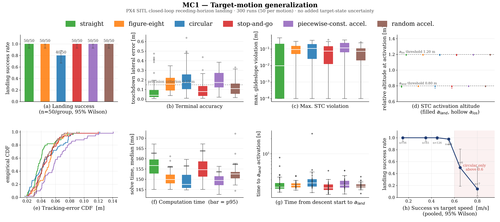
ROS adapters expose a solver core that carries no ROS types. State assembly rebases the vehicle odometry into the target-centered frame each solve; the solver returns a state, control and feedback-gain triple; and a replayer interpolates the plan against wall-clock time, handing off between the active and pending horizons.
A platform adapter isolates the airframe interface, with the diagram showing a ROS 1/MAVROS adapter for PX4 and a ROS 2/Crazyswarm 2 adapter for Crazyflie. Target kinematics enter through a separate publisher, which allows the estimator to be replaced without touching the planner.
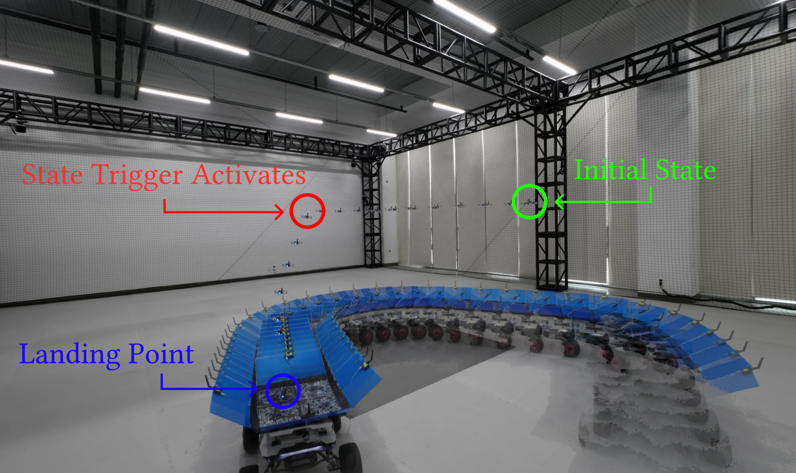
A Crazyflie 2.1 quadrotor lands on an ST-mini unmanned ground vehicle (UGV), which serves as the moving target. A Qualisys motion-capture system streams pose measurements for both vehicles over ROS 2; onboard inertial measurement unit (IMU) data supplied through Crazyswarm 2 complete the Crazyflie’s state estimate. The DDP solver runs off-board on an AMD Ryzen 7 4800HS CPU as a ROS 2 node.
At each replanning instant, it reads the current relative state, holds the latest target acceleration estimate constant, and re-solves the landing OCP using the shifted previous solution as a warm start. Replanning is event-driven at approximately 5 Hz, with median solve times of 178–188 ms across all conditions.
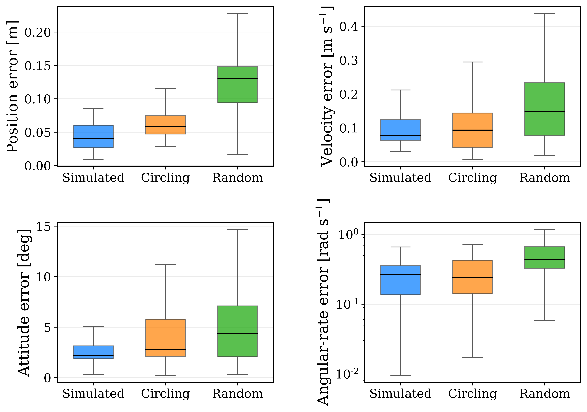
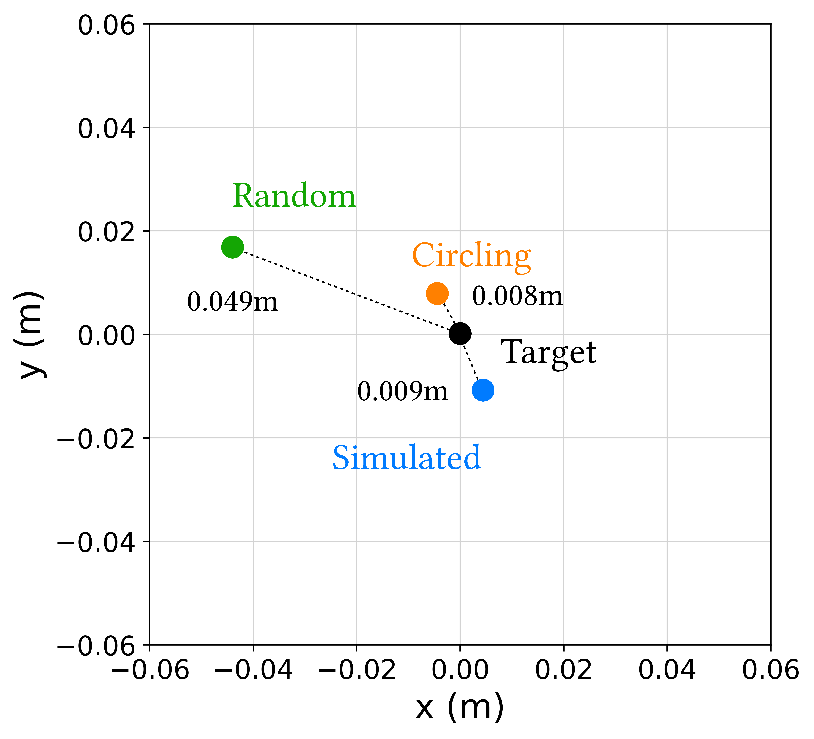
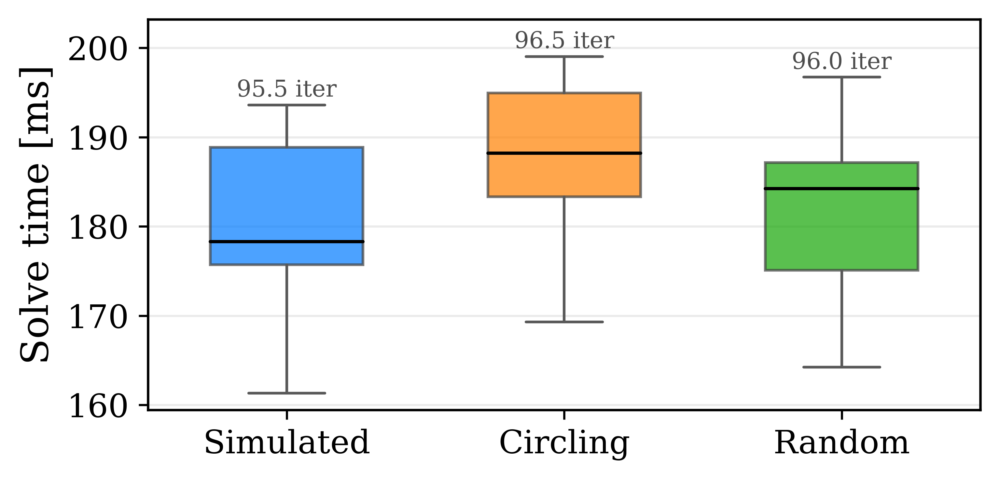
The STC trigger fires at \(t_{\mathrm{trig}}=6.56\)–\(8.19\) s in all runs, followed by a descent phase of 0.98–1.42 s.
Speed, tilt, and thrust show zero executed excess in these runs. Glideslope and body-rate excesses are nonzero in some conditions, as reported in the table. Body-rate values use Crazyswarm 2’s deg/s-to-rad/s conversion.
| Metric | Simulated | Circling | Random |
|---|---|---|---|
| ttrig [s] | 6.63 | 6.56 | 8.19 |
| Landing time [s] | 7.82 | 7.98 | 9.17 |
| Descent time [s] | 1.20 | 1.42 | 0.98 |
| Glideslope excess [m] | 0 | 0.098 | 0.011 |
| Body-rate excess [rad/s] | 0.048 | 0.057 | 0.477 |
Hardware landings under the two target motions, built from the recorded DJI footage as accumulating motion trails. The yellow ring tracks the quadrotor; the red ring marks where the state trigger activates.